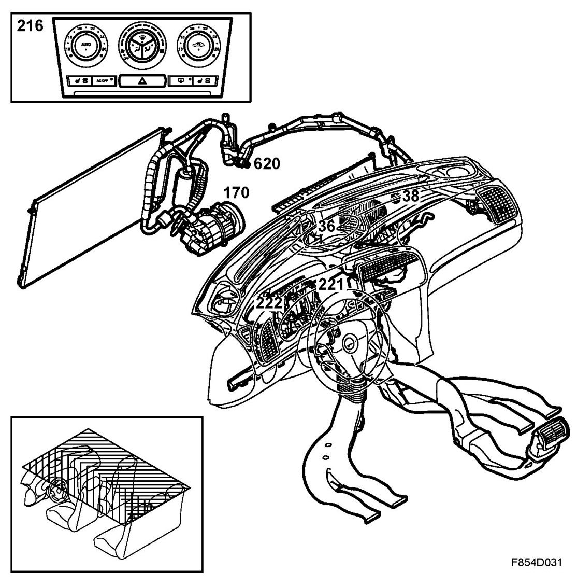

Brief Description
Brief Description
Overview
Heating and ventilation

- Automatic climate control ACC (216)
- Fresh-air filter (Particle filter)
- Combination filter (Optional)
- Ventilation fan (36)
- Heat exchanger
- Motor, recirculation flap (38)
- Motor, air mixing damper (222)
- Motor, air distribution damper (221)
- Evaporator
- Expansion valve
A/C system
- Compressor, A/C(170)
- Condenser
- Pressure sensor A/C(620)
- Receiver
- Expansion valve
- Evaporator
- A/C compressor relay (156)
- Motor, ventilation fan (36)
- Direct current motor, air recirculation flap (38)
A/C system
- Compressor, A/C(170)
- Condenser
- Pressure sensor A/C(620)
- Receiver
- Expansion valve
- Evaporator
- A/C compressor relay (156)
- Motor, ventilation fan (36)
- Direct current motor, air recirculation flap (38)
Description
The climate control system is designed to provide a comfortable cabin climate for passengers regardless of outside weather conditions.
The climate control system is available in the following versions:
- Heating and ventilation system with air conditioning (A/C) and Manual Climate Control (MCC)
ACC is described in Detailed description.
The climate control unit is located in the dashboard with LHD and RHD versions. The difference between the RHD and LHD versions is that the fan housing construction in the RHD version is reversed when compared to the LHD version.
Air enters the climate control system through a cover over the bulkhead partition space. The air passes through a compartment filter located in the bulkhead partition space. Otherwise, air is recirculated from the cabin. The air passes through an evaporator where it is cooled and dehumidified if the A/C system is in use.
Depending on the desired temperature, the air is directed by the air mixing damper past or through the heat exchanger if heat is required.
The temperature in the heat exchanger is not affected by the air mixing damper position but is dependent on coolant temperature and coolant flow.
The air is then directed through the air distribution damper into the cabin according to the desired air distribution selections. Air passes through a number of different vents in various cabin locations.
The car has two climate zones, with the driver and front seat passenger being able to set temperature individually. Rear seat passengers receive mixed air from the two front temperature zones.
Air is released via openings in the parcel shelf and out into two air evacuation outlets located inside the rear bumper on either side of the car behind the wheel housings.
The heating and ventilation unit and the glove box are connected with a hose and controls located inside the glove box in order to allow cool air to enter the glove box and cool its contents.